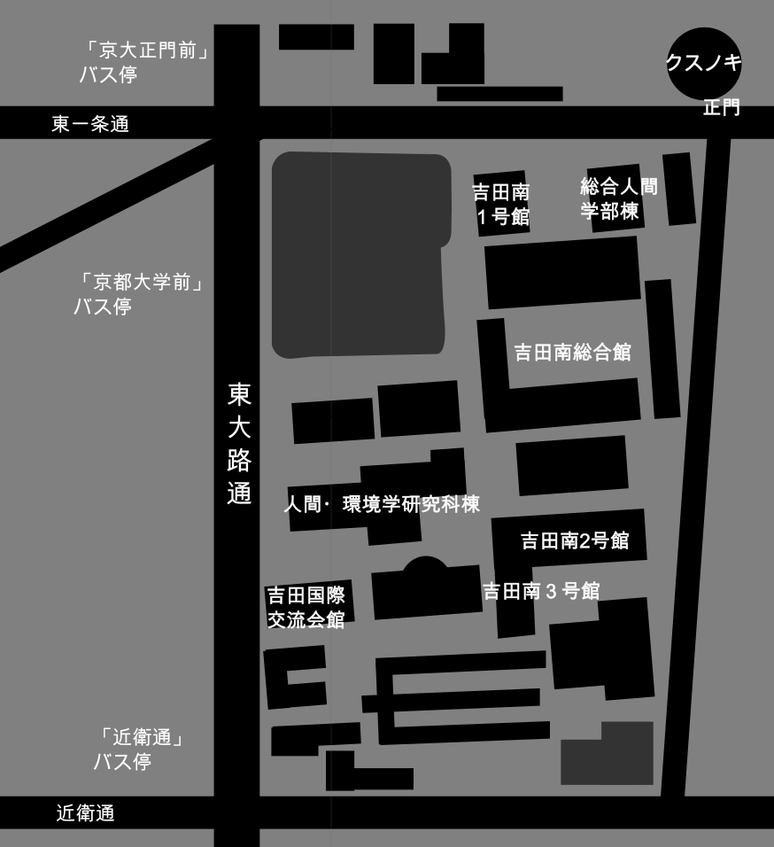

京都大学 吉田南 四号館（四共）十一教室
https://maps.app.goo.gl/33hBq1BGJDd2ePpt6

日時
十一月二十二日(金) 十一時
十一月二十三日(土) 十一時半 / 十三時半
※開場は開演の三十分前です。
※上演時間は約三十分を予定しています。
料金
三百円
▶︎「死神」 企画詳細◀︎
https://www.nf.la/project/7006
▶︎劇団ケッペキ 公式ホームページ◀︎
https://keppeki.github.io